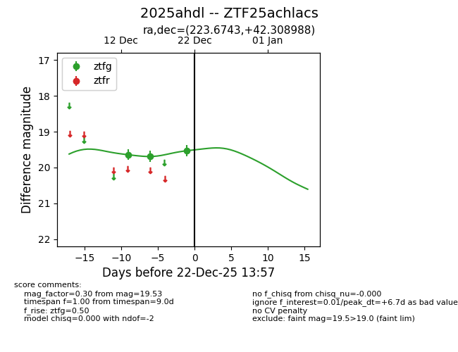
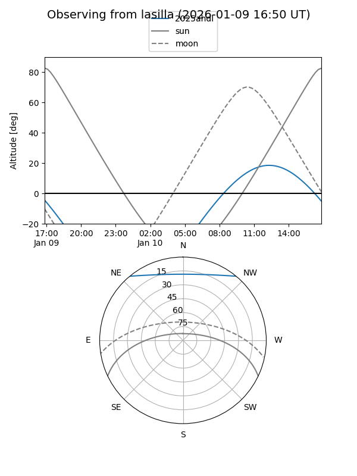
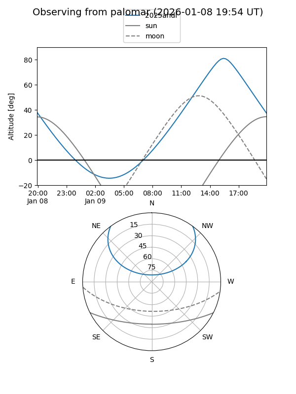

2025ahdl
Target 2025ahdl at 2025-12-18 11:18
Aliases and brokers:
FINK: fink-portal.org/ZTF25achlacs
Lasair: lasair-ztf.lsst.ac.uk/objects/ZTF25achlacs
ALeRCE: alerce.online/object/ZTF25achlacs
TNS: wis-tns.org/object/2025ahdl
YSE: ziggy.ucolick.org/yse/transient_detail/2025ahdl
alt names
ZTF25achlacs (ztf,fink_ztf)
2025ahdl (tns,yse)
Coordinates:
equatorial (ra, dec) = 223.6743,+42.30899
equatorial (HMS+DMS) = 14:54:41.83,+42:18:32.36
galactic (l, b) = (72.1774,+60.71404)
Photometry
last ztfg=19.69
2 ztfg detections
Lightcurve

Visibility


Additional plots